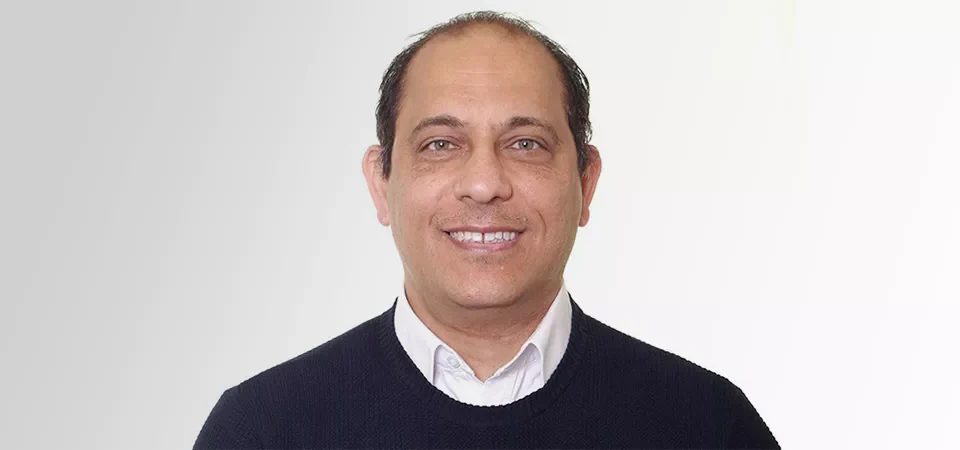
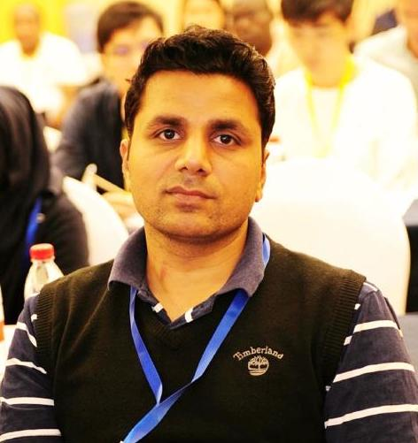

Junaid Arshad
Birmingham City University, UK
junaid.arshad@bcu.ac.ukThe workshop team brings experience in blockchain, distributed systems, cyber security, IoT and applied computing.
Birmingham City University, UK
junaid.arshad@bcu.ac.uk
Birmingham City University, UK
adel.aneiba@bcu.ac.ukBirmingham City University, UK
muhammadajmal.azad@bcu.ac.uk
Northumbria University, UK
Université Marie et Louis Pasteur, FEMTO-ST, CNRS, France
Share research that improves blockchain security, scalability and dependable deployment.